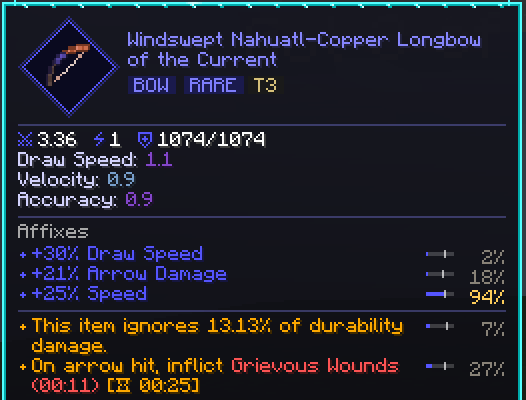

Босс в компании заметно крепче, зато душу босса получает каждый, кто был в бою.
A boss is a lot tougher against a group, but everyone who joined the fight gets its soul.

Наш собственный модпак — и сервер только для своих.
Our own modpack, and a server just for our crew.
Это не «ванилла плюс пара модов». Тут подземелья с уровнями сложности, два десятка боссов со своими логовами, база, которая растёт вместе со всем сервером, кухня с пивом и вином и трава как целая наука. Заводов, проводов и механизмов нет: сильнее ты становишься от шмота, который добываешь и куёшь сам.
This isn't "vanilla plus a couple of mods". You get dungeons with difficulty tiers, two dozen bosses with lairs of their own, a base that grows along with the whole server, a kitchen with beer and wine, and weed as a whole science. There are no factories, wires or machines: you get stronger from gear you loot and forge yourself.
Самое главное — базу, траву, торговлю и 3D-карту — мы написали сами, специально под этот сервер. И всё заточено под компанию.
The big stuff (the base, the weed, the trading and the 3D map) we wrote ourselves, just for this server. And all of it is made for playing as a crew.
Мобы, боссы и сундуки подстраиваются под то, сколько вас рядом: чем больше народу, тем враги крепче и злее, но и лут щедрее, а опыт делится на всех. Косяк идёт по кругу: присел, кликнул по другу, передал.
Mobs, bosses and chests adjust to how many of you are nearby: the more of you there are, the tougher and meaner the enemies, but the loot gets more generous too, and XP is shared by everyone. A joint goes round the circle: crouch, click a friend, pass it on.

Босс в компании заметно крепче, зато душу босса получает каждый, кто был в бою.
A boss is a lot tougher against a group, but everyone who joined the fight gets its soul.

Чем больше накуренных рядом, тем сильнее приход, а «Хотбокс!» в маленькой комнате делится частью твоего прихода со всеми, кто внутри.
The more high people around you, the stronger the high, and "Hotbox!" in a small room shares part of your high with everyone inside.

Отставшего «Маяк возврата» выдёргивает к базе хоть из другого измерения.
The "Recall Beacon" yanks a straggler back to base, even from another dimension.
Что пишешь в чат, всплывает облачком у тебя над головой, а любую вещь можно показать всем прямо в чате.
Whatever you type in chat pops up as a bubble over your head, and you can show any item to everyone right in chat.
Мир тут не ванильный: горы, тропические берега, кленовые и секвойные леса, цветущие дюны, и всё недалеко — за пустыней или снегом не надо идти полдня. Реки настоящие: текут по рельефу, ветвятся и спускаются к морю.
The world here isn't vanilla: mountains, tropical shores, maple and redwood forests, blooming dunes, and it's all close by, so no half-day hike to reach a desert or snow. The rivers are real: they follow the land, branch out and run down to the sea.


В Незере новые биомы, а в Крае — новый остров.
The Nether has new biomes, and the End has a new island.

В кровавую луну мобов вдвое больше, зато и лута с них больше, а в редкую синюю луну трава даёт двойной урожай.
A blood moon brings twice the mobs, but more loot off them too, and under the rare blue moon your weed harvest doubles.
Деревни крупнее и попадаются чаще, от пляжных до горных и подземных.
Villages are bigger and show up more often, from beach ones to mountain and underground ones.
А между походами движуха сама приходит к тебе: рейды на деревни, караваны разбойников с грузом и ящики с неба, собранные для фермера, шахтёра, бойца или кузнеца, — а куда упал ящик, пишут в чат.
And between trips the action comes to you: raids on villages, bandit caravans hauling cargo, and crates dropping from the sky, packed for a farmer, a miner, a fighter or a smith, and chat tells you where each one landed.
Наша карта — не плоская картинка, а 3D-модель мира под углом: её можно крутить, двигать и приближать, и видно крыши, склоны и реки. На нашей версии игры такой карты больше ни у кого нет — мы сделали её сами.
Our map isn't a flat picture but a 3D model of the world at an angle: spin it, drag it and zoom in, and you see roofs, slopes and rivers. Nobody else on our version of the game has a map like this: we built it ourselves.


Есть миникарта с компасом, а где ты ещё не был, там туман.
There's a minimap with a compass, and fog wherever you haven't been yet.
Друзей видно на карте, даже когда они на другом конце мира, а если приблизить, разглядишь каждую башню и дорогу.
You can see your friends on the map even when they're on the other side of the world, and if you zoom in you can make out every tower and road.
Главные подземелья идут по уровням, от первого до пятого: первый — для первых вечеров, пятый — самое сложное в игре. Чем выше уровень, тем сильнее шмот, который там падает.
The main dungeons go by tier, from one to five: tier one is for your first evenings, tier five is the hardest thing in the game. The higher the tier, the stronger the gear that drops there.


Внутри три этажа, элитные мобы со своими фишками, «Засада!» на третьем этаже и мини-босс в самом низу.
Inside there are three floors, elite mobs with their own tricks, an "Ambush!" on the third floor and a mini-boss at the very bottom.
У каждого забега своя тема — склеп, затопленное подземелье, логово разбойников, ледяное или песчаное, — и у каждой темы свои вещи, за которыми туда стоит ходить. Шмот из подземелья не вынести, пока не убит его мини-босс.
Every run has its own theme (a crypt, a flooded dungeon, a bandit hideout, an icy one or a sandy one), and each theme has its own items worth going back for. You can't carry dungeon gear out until its mini-boss is dead.
Пройденное подземелье само отстраивается через несколько часов игры, а «Ключ подземелья» перезапускает его сразу. Кроме них есть крепости, храмы, корабли, морские руины и врата, из которых лезут волны мобов.
A cleared dungeon rebuilds itself after a few hours of play, and a "Dungeon Key" restarts it right away. On top of those there are fortresses, temples, ships, sea ruins and gates that spit out waves of mobs.
Шмот здесь — главный лут, и именно он делает тебя сильнее. Оружие и броня из подземелий, с боссов и рейдов выпадают со случайными свойствами и своей редкостью, от обычной до мифической, а самые сильные значения бывают только в верхних подземельях и с боссов.
Gear is the real loot here, and it's what makes you stronger. Weapons and armour from dungeons, bosses and raids drop with random properties and a rarity of their own, from common to mythic, and the strongest rolls only come from the top dungeons and from bosses.




Есть клинки, у каждого своя способность, новые луки и целые комплекты брони, которые крафтишь сам.
There are blades that each have an ability of their own, new bows, and whole armour sets you craft yourself.

За столом трансмога вид любой своей брони можно перенести на ту, что на тебе, а лук по виду сразу выдаёт свою ступень — от каменного до алмазного.
At the transmog table you can put the look of any armour you own onto the armour you're wearing, and a bow's look tells you its tier at a glance, from stone to diamond.
Оружие и инструменты собираешь из деталей в своей кузне, и они прокачиваются, пока ими пользуешься; материалы с боссов превращают их в совсем другие инструменты — скажем, в кирку, которая видит руду сквозь стены.
You build weapons and tools from parts at your own forge, and they level up the more you use them; boss materials turn them into completely different tools, say, a pickaxe that sees ore through walls.
Если бонусы выпали плохо, «Стол перековки» перебросит один или все, а лишняя душа босса закрепит нужный бонус и перебросит только его силу. Артефакты и реликвии из сундуков носятся в отдельных слотах и дают свои бонусы.
If the bonuses rolled badly, the "Reforging Bench" rerolls one or all of them, and a spare boss soul locks in the bonus you want and rerolls only how strong it is. Artifacts and relics from chests go in slots of their own and give their own bonuses.
Боссов тут два десятка, и у каждого своё логово: Йети в берлоге, Инфернальный дракон в башне, Капитан пиратов с Кракеном на корабле. Есть ранние, средние и поздние, и поздние — самое сложное в игре. Душу побеждённого босса относишь на Очаг, и она открывает тебе его дар — небольшой бонус, а какие дары включить, выбираешь сам.
There are two dozen bosses here, and each has its own lair: the Yeti in a den, the Infernal Dragon in a tower, the Pirate Captain with the Kraken on a ship. There are early, mid and late ones, and the late ones are the hardest thing in the game. Bring a beaten boss's soul to the Hearth and it unlocks that boss's Boon for you, a small bonus, and you pick which Boons are switched on.


Сундуки в логове заперты, пока босс жив, а убежать и бить издалека не выйдет: боссы догоняют, делают рывок и ломают заборы. Огнестрел косит мобов, рейды и караваны, но боссы почти не чувствуют пуль — к ним идут с клинком, луком и самодельным оружием.
The chests in a lair stay locked while the boss is alive, and running off to hit it from a distance won't work: bosses catch up, dash at you and smash through fences. Guns mow down mobs, raids and caravans, but bosses barely feel bullets, so you go at them with a blade, a bow and weapons you made yourself.
Координаты никто не раздаёт: к логовам ведут карты, которые продаёт Ценитель или которые можно выменять на лишние души. На Очаге видна лестница боссов: кто следующий, где он живёт и какой дар даёт.
Nobody hands out coordinates: maps to the lairs come from the Connoisseur, or you can trade spare souls for them. The Hearth shows the boss ladder: who's next, where they live and which Boon they give.
Визера и Дракона Края тоже переделали: у них новые атаки и фазы, а Дракон теперь огромный, с крыльями, как в кино.
The Wither and the Ender Dragon got reworked too: they have new attacks and phases, and the Dragon is now huge, with wings like in the films.
Сердце базы — наш блок «Очаг». Ставишь его — и база основана, друзья к ней присоединяются, а вокруг появляется зона, которую по ночам подсвечивает светящаяся лоза. В зоне базы тебя подлечивает, возрождаешься ты у Очага, а всё растёт и плавится быстрее.
The heart of a base is our "Hearth" block. Place it and the base is founded, your friends join it, and a zone appears around it that glowing vines light up at night. Inside the base zone you get healed, you respawn at the Hearth, and everything grows and smelts faster.

У базы три уровня, и для каждого мало просто наставить блоков: нужны души боссов и комнаты, которыми реально пользуются, — мастерская, склад, грядка, потом пивоварня, алхимия, кухня.
The base has three tiers, and for each one just placing blocks isn't enough: you need boss souls and rooms people actually use, like a workshop, storage, a grow plot, and later a brewery, alchemy and a kitchen.
Посиди немного на корточках у Очага — и унесёшь с собой «Благословение Очага»: лишнее сердце, а с прокачанной базы два сердца и прибавку к урону, на полчаса-час и где угодно.
Crouch at the Hearth for a moment and you'll carry the "Hearth's Blessing" away with you: an extra heart, or two hearts and bonus damage from an upgraded base, for half an hour to an hour, anywhere.
Над всеми базами стоит «Уровень мира» — общий прогресс сервера. Когда компания закрыла список целей — базы, боссы, подземелья, собранная трава, — кто-нибудь жмёт кнопку на Очаге, и мир для всех становится щедрее и опаснее: лут лучше, но мобы и боссы крепче, и появляются новые твари. Уровней три, и последний — это финал всего сервера.
Above all the bases sits the "World Level", the whole server's shared progress. Once the crew has ticked off the goal list (bases, bosses, dungeons, weed collected), any one of you presses the button on the Hearth, and the world gets more generous and more dangerous for everyone: the loot gets better, but mobs and bosses get tougher, and new creatures show up. There are three levels, and the last one is the finale of the whole server.
Для финала нужны прокачанная до конца база, Визер, Дракон Края, один из поздних боссов и пройденные самые трудные подземелья.
The finale takes a fully upgraded base, the Wither, the Ender Dragon, one of the late bosses and the hardest dungeons cleared.
Трава — целая наука, и этот мод мы написали сами: полторы сотни сортов, от дешёвой стартовой дряни до легенд, и часть растёт прямо в дикой природе, каждый сорт в своём климате. У каждого сорта свой баф под своё дело — стрельбу, ближний бой, боссов, подземелья, шахту, стройку или дорогу, — так что собирать разные сорта реально есть смысл.
Weed is a whole science, and we wrote this mod ourselves: a hundred and fifty strains, from cheap starter junk to legends, and some of them grow right out in the wild, each strain in its own climate. Every strain has its own buff for its own job (shooting, melee, bosses, dungeons, mining, building or the road), so collecting different strains really pays off.


Скрещиваешь прямо на грядке: спелый куст опыляет соседний, пчёлы помогают, а легенду выведешь только из дикой пыльцы и правильной пары семян.
You cross them right on the grow plot: a ripe bush pollinates its neighbour, bees help out, and you only get a legend from wild pollen and the right pair of seeds.

Для травы есть особые грядки, ножницы, с которыми урожай больше, и УФ-лампа: под ней любой сорт растёт где угодно и быстрее, но шишки выходят попроще.
Weed gets special grow plots, shears that get you a bigger harvest, and a UV lamp: under it any strain grows anywhere, and faster, but the buds come out plainer.

Накуренность идёт по шкале, от «слегка накурен» до «в хлам»; перебрал — тошнит и темнеет в глазах.
Being high goes on a scale, from "buzzed" to "baked"; overdo it and you feel sick and your vision goes dark.
Урожай — это шишки, и их качество зависит от почвы, света и климата: в родном климате куст прёт, в чужом еле тянет, а с химией шишек больше, но они хуже.
The harvest is buds, and their quality depends on soil, light and climate: in its home climate a bush goes wild, in a foreign one it barely gets by, and with chemicals you get more buds, but worse ones.
Сорт получше даёт тот же баф, только сильнее, так что редкие семена из подземелий стоит поискать. Есть и свои сорта в честь мест Дагестана: Сарыкумская Дюна, Гунибский Призрак, Дербентская Стена, Махачкалинские Ночи.
A better strain gives the same buff, just stronger, so the rare seeds from dungeons are worth hunting for. There are also our own strains named after places in Dagestan: Sarykum Dune, Gunib Ghost, Derbent Wall, Makhachkala Nights.
Жители деревень траву не покупают: её берёт только Ценитель — бродячий тип в панаме и с псом. Он приходит примерно раз в час, появляется недалеко от кого-нибудь из вас, и весь сервер узнаёт об этом в чате.
Villagers don't buy weed: the only one who does is the Connoisseur, a wandering guy in a bucket hat with a dog. He shows up about once an hour somewhere near one of you, and the whole server hears about it in chat.


Берёт он только шишки, и чем лучше трава, тем она дороже, а взамен у него есть стволы и редкие вещи, которых больше нигде не достать.
He only takes buds, and the better the weed, the more it's worth, and in return he has guns and rare things you can't get anywhere else.
Чем больше ты ему продаёшь, тем выше твой ранг дилера, и каждый новый ранг объявляют всем в чате. Иногда у него находится карта к дикому сорту, к логову босса или ключ от подземелья получше.
The more you sell him, the higher your dealer rank, and every new rank gets announced to everyone in chat. Sometimes he has a map to a wild strain or a boss lair, or a better dungeon key.
Между собой торгуем в «Лавке»: выставил что угодно, друзья купили.
Between us there's the "Shop": list anything, your friends buy it.
«Игровой автомат» — настоящее казино, но трезвым к нему не подходи: играть можно только накуренным или выпившим. Ставишь шишки, дёргаешь рычаг, а в призах патроны и стволы, семена, ключи от подземелий, редкие материалы и шмот со свойствами.
The "Slot Machine" is a real casino, but don't go near it sober: you can only play high or tipsy. You bet buds, pull the lever, and the prizes are ammo and guns, seeds, dungeon keys, rare materials and gear with properties.

С каждой ставки автомат подкидывает немного в общий банк, а кто выбьет три семёрки, забирает его — целой горстью призов.
Every bet makes the machine toss a little into a shared pot, and whoever lands three sevens takes it home as a whole handful of prizes.

На второй вкладке — «Удвоение»: ставишь горсть шишек и тянешь карту — удвоил, поднял сорт или потерял всё.
The second tab is "Double Up": put down a handful of buds and draw a card to double them, upgrade the strain or lose the lot.
Выигрыш можно не забирать и рискнуть им: повезёт — станет призом классом выше, нет — пропадёт. Чем толще банк, тем ярче горит вывеска на каждом автомате.
Instead of taking a win you can gamble it: with luck it turns into a prize a class up, without it it's gone. The fatter the pot, the brighter the sign glows on every machine.
Ствол, который не жалко, тоже можно поставить и выиграть ствол классом выше.
You can also bet a gun you don't mind losing and win a gun a class up.
Кухня собрана из нескольких кулинарных модов, которые мы подружили между собой: готовка, выпечка, сыры, а пиво, медовуха и вино пьянят по-настоящему. Главное тут — Пир: четыре разных блюда на столе, и каждый, кто поел, два часа ходит с двумя лишними сердцами и прибавкой к урону.
The kitchen is built from several cooking mods that we got working together: cooking, baking, cheeses, and beer, mead and wine get you properly drunk. The main thing is the Feast: four different dishes on a table, and everyone who eats walks around for two hours with two extra hearts and bonus damage.


Зелья — отдельное ремесло, и мы нарочно держим их ценными: готовых в луте почти нет, варить придётся самим.
Potions are a craft of their own, and we keep them valuable on purpose: there are almost no ready-made ones in loot, so you'll be brewing them yourselves.

Животных больше, стада большие, из загонов ничего не пропадает, а пугало не подпускает мобов к грядкам.
There are more animals, herds are big, nothing goes missing from your pens, and a scarecrow keeps mobs off your crops.
Разнообразная еда — это здоровье: чем больше разных блюд ты попробовал, тем больше у тебя сердец, и после смерти это не сбрасывается. Стейк из печки почти не насыщает, сытость держат блюда.
Varied food means health: the more different dishes you've tried, the more hearts you have, and that doesn't reset when you die. A steak from the furnace barely fills you up; meals are what keep you full.
Восемь блюд на двух столах — это Большой пир: тогда раз в полчаса смертельный удар тебя не убивает.
Eight dishes on two tables makes it a Grand Feast: then once every half hour a killing blow doesn't kill you.
Трава, зелье, еда и выпивка — четыре разных источника бафов, а «Благословение Очага» — пятый: собери несколько сразу — и включается «Готов к бою», с регенерацией, лишними сердцами и стойкостью к отбрасыванию. Для фруктов свои деревья, для вина — виноград и пресс.
Weed, potions, food and drink are four different sources of buffs, and the "Hearth's Blessing" is a fifth: stack several at once and "Prepared" kicks in, with regen, extra hearts and knockback resistance. Fruit gets its own trees, and wine gets grapes and a press.
Мебели и декора — тонны: столы, стулья и полки из любого дерева, подушки, ковры, шторы, картины, мосты и стекло, которое сливается в одну сплошную витрину. Для хранения у нас свой «Терминал заначки»: один блок видит все сундуки вокруг, с поиском, сортировкой и крафтом прямо из него.
Furniture and decor by the ton: tables, chairs and shelves from any wood, cushions, rugs, curtains, paintings, bridges, and glass that merges into one seamless display window. For storage we've got our own "Stash Terminal": one block sees every chest around it, with search, sorting and crafting right from it.


Между базами прыгаешь камнями телепорта, а по дорогам гоняешь на машинах.
You hop between bases with teleport stones and cruise the roads in cars.

У каждой зачарованной книги своя обложка, у модовых тоже, так что Починку от Остроты отличишь с первого взгляда.
Every enchanted book has its own cover, the modded ones too, so you can tell Mending from Sharpness at a glance.
Кнопка «Убрать всё» на любом экране отправляет вещи в ближайший терминал, а пульт открывает его из любой точки базы. С Shift руда добывается целой жилой, есть рюкзаки, а лава сама течёт по трубам в плавильню.
The "Stash all" button on any screen sends your stuff to the nearest terminal, and a remote opens it from anywhere on the base. Hold Shift and ore comes out a whole vein at a time, there are backpacks, and lava runs through pipes into the smeltery by itself.
В «Бумбоксе» у каждого есть вся музыка, которую мы закинем на сервер, и его можно поставить на пол или играть прямо в руках.
Everyone's "Boombox" has all the music we put on the server, and you can set it on the floor or play it right from your hands.
Он сам поставит Forge 1.20.1 и весь пак.
It installs Forge 1.20.1 and the whole pack for you.
Адрес пришлём в чате: напиши любому из нас.
We send the address in chat: message any of us.
Это свежий мир, обычно нас четыре-пять человек, но и ввосьмером ничего не тормозит. Лицензию Minecraft покупать не нужно.
It's a fresh world, there are usually four or five of us, and even with eight nothing lags. You don't need to buy a Minecraft licence.